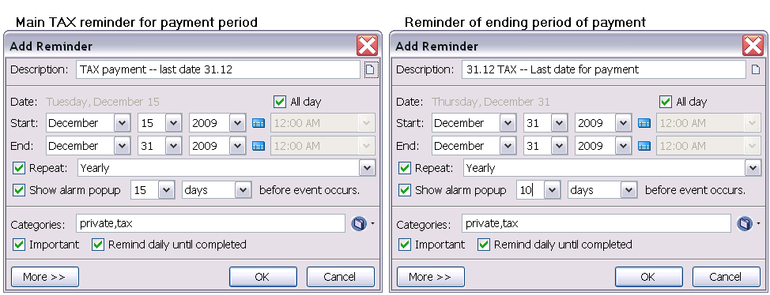

FAQ - Häufig gestellte Fragen
FAQ - Häufig gestellte Fragen
FAQ - Häufig gestellte Fragen
FAQ - Häufig gestellte FragenIn den Titeln für Termine und Aufgaben lässt sich die Anzahl der Jahre von einer Jahreszahl bis 'heute' darstellen -- wie z.B. Julia's 11. Geburtstag -- einfach durch Eingabe eines Termins mit Julia's <1995> Geburtstag. d.h. mit der Jahreszahl gesetzt in spitze Klammern.
Durch die Eingabe von z.B. <1995#> -- Jahreszahl gefolgt von dem Zeichen # -- erfolgt nur die Ausgabe als Zahl, ohne Punkt.
Künftige Jahreszahlen sich ebenfalls möglich. Mit beiden Optionen würde das Enddatum eines Kredites angezeigt:
Beispiel: Der Kredit ist in <2023#> Jahren abgezahltergibt: "Der Kredit ist in 15 Jahren abgezahlt".
Mehrere Berechnungen in einem Titel sind möglich.
Beispiel: Tom's <1978> Geburtstag Dan's <1980> Jahrestag"
Mit der angezeigten Liste der Termine oder Aufgaben (ggf. mittels Filtern der Ereignisse eingeschränkt) einfach das Kontextmenü aufrufen. Dies zeigt die Liste der Aufgaben in einem Browser Fenster in HTML Darstellung an. Mit Hilfe der Browser Druckfunktionen lassen sich so die Listen ausdrucken.
Die Zahlperiode beginnt mit dem 15.Dezember, das ist das wichtige Datum. Der 31.Dezember als Enddatum ist weniger wichig, dies kann mit einen Hinweis im Textfeld festgehalten werden. So wäre der Termin aufzusetzen mit der Funktion [Termin hinzufügen]:
Betreff: "Zahlungen -- letztes Datum: 31.12" Datum : 15.12 Alarm: 15 Tage vor dem Ereignis Aktivieren: [Erinnern bis erledigt]
15 Tage vor dem Termin (dem ersten Dezember) wird ein Alarm ausgelöst, ein Fenster zeigt an, dass der Termin "Zahlungen -- letztes Datum: 31.12" ansteht.
Nun kann der Alarm neu gesetzt werden, z.B. auf 5 "Tage vor dem Ereignis". Damit erscheint der nächste Alarm am 10.Dezember.
Eine wichtige Einstellung -- und ein wirklicher Vorteil von Reminderfox -- ist: "Erinnern bis erledigt" sollte mit diesem Termin aktiviert werden! Und zwar: wenn der 15.Dez erreicht ist, greift jetzt die gewählte Option "Erinnern bis erledigt " und wird den Termin solange als aktuellen Tagestermin präsentieren, also am 16.Dez, 17.Dez usw. bis er als "Erledigt" markiert wird. Dies ist eine wichtige Eigenschaft von ReminderFox: verstrichene Termine, die nicht bestätigt werden gehen nicht verloren! Natürlich wird in unserem Beispiel die Wiederholung auf "Jährlich" gesetzt, so wird die beschriebene Prozedur im folgenden Jahr wiederholt.
Ein zweiter Termin kann auf den "31.12 ZAHLUNG -- Letzter Termin " gesetzt werden. Und auch dieser erhält einen "Alarm" mit 10 Tagen Vorlauf. Mit "Erinnern bis erledigt" wird dann ab dem 21.Dez bis zum 31.Dez wieder die Erinnerung 'geschoben' auf den nächsten Tag, sofern er nicht als erledigt markiert wird.

Verschiedene Wiederholungsoptionen werden vorgeben (jährlich, monatlich, wöchentlich, täglich), wobei sich diese Intervalle auf den ausgewählten Tag beziehen. Weitere Optionen sind mittels des Menüpunktes "Weitere .." erreichbar. Hier lässt sich zum vorher ausgewählten Interval sowohl eine zeitliche Beschränkung, als auch ein alternativer Rhytmus (z.B. alle 3 Monate) angeben.
Einfach die Zeit in das Zeitfenster eingeben, z.B. 10:23 oder für eine Benachrichtigung in 17 Minuten. Die vorgegebenen Zeiten des Menü sind lediglich zur einfachen Auswahl gedacht.
Jeder einzelne Termin einer Terminfolge kann als erledigt markiert werden. Einfach die Zeile auswählen und als erledigt markieren. Dadurch wird der aktuelle und alle vorherigen Termine als erledigt markiert. Künftige Termine der Folge werden nicht berührt. Ebenfalls kann ein einzelner Termin aus der Folge gelöscht werden. Soll ein Termin mit Wiederholungseinstellung gelöscht werden, so wird durch eine Anzeige erfragt, ob alle oder nur der ausgewählte (und alle vorherigen) Termine gelöscht werden sollen.
Sowohl der Wochentag als auch eine Reihe anderer Einstellungen können hinzugefügt werden. Hierzu werden die Reminderfox Einstellungen / Optionen und der Tab 'Tooltip' aufgerufen. Dort lässt sich Anzeige für heutige und künftige Termine konfigurieren.
Mit 'Anpassen' wird eine Liste der möglichen Einstellungen angezeigt, so z.B. ergibt diese Eingabe
[shortDay] [date].[shortMonth]: [reminderDesc] ([time])
die folgende Anzeige: Di 21.Jun : Treffen mit Schmidt (14:30).
Ebenso können die Anzahl der Tage bis zum Termin angegeben werden:
[shortDay] [date].[shortMonth]: [reminderDesc] -- in [daysUntil] Tagen
Die Tooltip Anzeige kann -- ähnlich wie die Titelanzeige in erweiterter Form angezeigt werden:
11.Jan (20:15) SAT1: Das weiß doch jedes Kind! Kategorie: TV in 4 Tagen
Dies wird erreicht durch folgende Eingabe:
[date].[shortMonth] ([time]) [reminderDesc]\nKategorie: [category]\nin [daysUntil] Tagen\n
Die zulässigen Parameter sind im Dialog Einstellungen: Tooltip im Bereich 'Darstellung' [Anpassen] aufgeführt. Die Eingabe von '\n' ermöglicht den Beginn einer neuen Zeile.
Ja, ein besonderer Vorteil von Reminderfox ist die Anzeige von vergangenen Terminen durch die Verwendung der Option [Erinnern bis erledigt]. Ist der Termin verstrichen, so erfolgt die Anzeige des Termins in der Liste unter dem aktuellen Datum. Der überfällige Termin (Termin in der Vergangenheit) wird außerdem auf unterschiedliche Art angezeigt:
Die Aufgabenliste kann nach Wunsch sortiert werden. Aus der angezeigten Liste wird eine Zeile ausgewählt und mit der rechten Maustaste das Kontextmenü aufgerufen. Dort kann mit den Tasten [Nach oben] bzw. [Nach unten] diese Zeile verschoben werden. Dies ist auch möglich durch die Tastenkombination [ALT] + [Hoch] oder [Runter].
Ja. Das Hinweis- und die Benachrichtigungsfenster können über das Kontextmenü ausgeschaltet werden. Dies ist beispielsweise während Präsentationen oder Vorführungen möglich, um z.B. sehr persönliche Termine auszuschalten.
Mit einer Subscription werden Termininformationen, die im Netz veröffentlicht sind in Reminderfox als eine 'individuelle Liste' dargestellt. Allerdings erfolgt keine interne, d.h. lokale Speicherung dieser Termininformationen. Beim Aufruf der Subscriptionsliste, d.h. mit Auswhl des entsprechenden Listen-Tabulators wird an die Subscriptions-URL eine Anfrage geschickt, um den neuesten Stand der Termine übermittelt zu bekommen. So ist es möglich immer den aktuellsten Stand zu sehen. Werden z.B. die Spieltermine eines Vereins ins Netz gestellt und bei einer Änderung auch im Netz gepflegt, so werden mit Reminderfox immer die aktuellen Termine angezeigt. Wären die Termininformationen mit der Funktion 'Importieren' eingelesen, so müssten sie von Benutzer immer selbst aktualisiert werden.
Mit dem Cursor auf dem gewünschten Menü und der rechten Maustaste wird der Menüpunkt [Anpassen] gewählt. Es öffnet sich ein Dialog "Symbolleiste anpassen". In dem Dialogfenster werden verfügbare Symbole angezeigt. Das gewünschte Symbol wird einfach auf die Symbolleiste gezogen.
Der beste Weg zu weitergehender Unterstützung ist es, ein Mail an die Autoren zu senden. Das Kontextmenü auf der Statusleiste (oder auf dem Foxy Symbol im ReminderFox Dialog) bietet hierzu eine einfache Hilfe: der Eintrag Über ReminderFox .. öffnet ein Fenster.
Dort steht unter News & Support ein Aufruf zum Senden eines E-Mail zur Verfügung. Dabei wird das E-Mail mit relevanten Informationen zur Installation geöffnet.
Alternativ kann auch direkt ein E-Mail gesendet werden mit:
E-Mail Anfrage
Bitte die verwendete Anwendung (Thunderbird, Firefox o.ä) und die ReminderFox Version angeben.
Es ist der Fußabdruck eines Fuchses mit einer Schleife. Es ist eine übliche Praxis von Vergesslichen sich eine Schleife um den Finger zu wickeln (oder sich einen Knoten ins Taschentuch zu machen) um sich daran zu erinnern, das etwas zu erledigen ist. Also die Schleife um die Fuchspfote gewickelt, steht für Erinnerung.